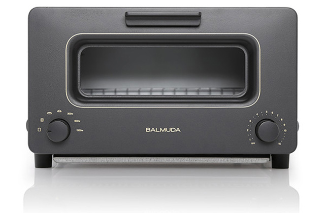
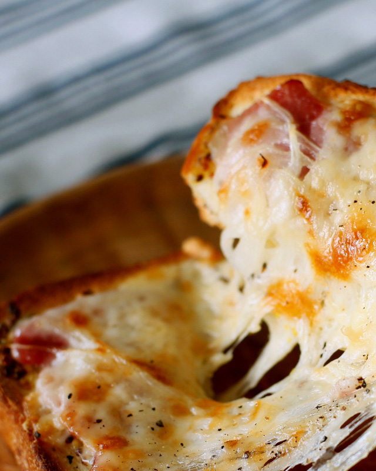
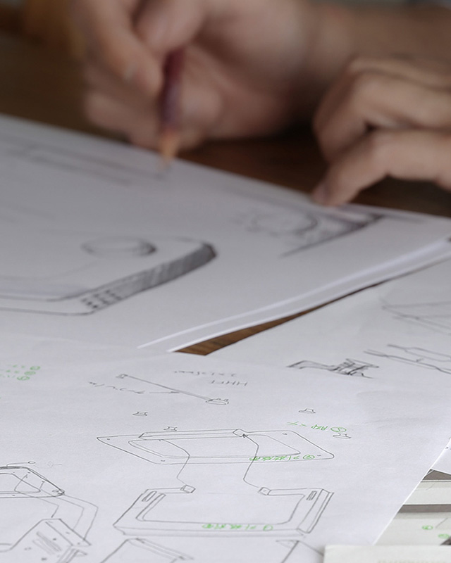
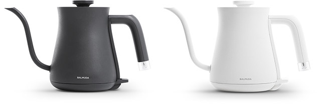
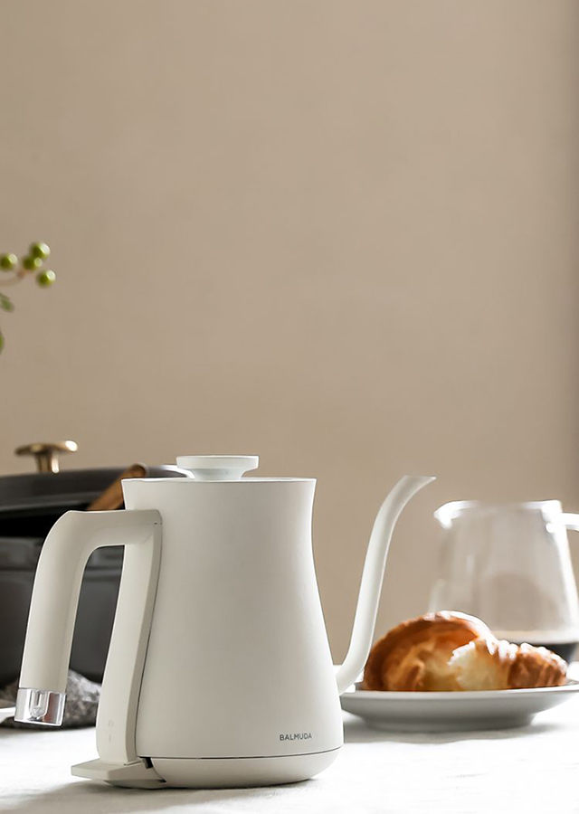
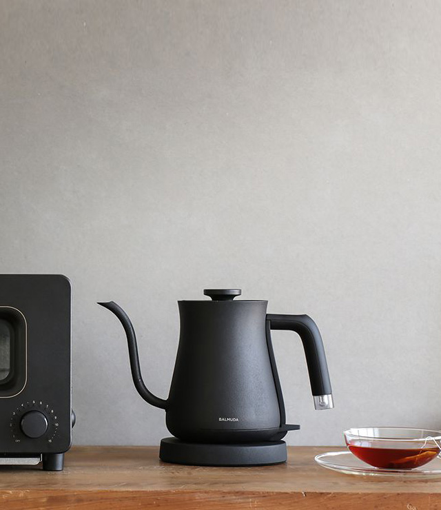

본문 영역
kitchen-
Toaster
-
Pot
BALMUDA The Toaster

감동의 토스터
BALMUDA The Toaster
BALMUDA The Toaster
BALMUDA The Toaster는 풍부한 향과 식감을 실현하는 감동의 토스터. 발뮤다만의 스팀 테크놀로지와 온도 제어의 만남으로 놀라운 맛을 실현했습니다.
새로워진 클래식 모드는, 다양한 요리를 좀 더 쉽고 맛있게 즐기실 수 있습니다.
-

- 특별한 맛
- BALMUDA The Toaster에는 가장 맛있는 맛을 실현하기 위해 토스트, 치즈토스트, 바게트, 크루아상, 클래식 모드로 구성된 5가지 모드가 있습니다. 자세히
-
- 토스트를 과학하다
- BALMUDA The Toaster를 사용한다면 누구라도 쉽게 맛있는 토스트를 구울 수 있으며, 갓 구워낸 바삭한 크루아상을 만들 수 있습니다.자세히
-

- 스토리
- BALMUDA The Toaster의 개발 스토리는 1992년 스페인 남부에 위치한 론다라는 곳에서부터 시작되었습니다.
놀랍고 신기한 발견의 연속이었던 여정과 토스터 완성에 이르기까지의 스토리를 소개합니다. 자세히
BALMUDA The Pot

작고 아름다운
BALMUDA The Pot
BALMUDA The Pot
BALMUDA The Toaster는 풍부한 향과 식감을 실현하는 감동의 토스터. 발뮤다만의 스팀 테크놀로지와 온도 제어의 만남으로 놀라운 맛을 실현했습니다.
새로워진 클래식 모드는, 다양한 요리를 좀 더 쉽고 맛있게 즐기실 수 있습니다.
-

- 실용적인 사이즈
- 수납공간을 크게 차지하지 않는 600ml의 실용적인 사이즈. 물을 부을 때 가장 좋은 느낌을 주는 노즐과 손잡이 모양. 매일 간편하고 기분 좋게 사용할 수 있도록 디자인했습니다. 자세히
-

- 커피와 차의 풍미를
끌어 올리는법 - BALMUDA The Pot은 커피와 차의 풍미를 더욱 끌어올려 줍니다.여러분의 티타임이 더욱 즐거워지는 다양한 차 만드는 법을 소개합니다. 자세히
- 커피와 차의 풍미를
-
- The Pot의 탄생
- 꼭 잘 차린 만찬이 아니더라도 '맛있다'고 느낀 식사 한 끼는 우리의 마음을 풍요롭게 해줍니다. BALMUDA The Pot과 함께 더욱 만족스러운 식탁을 꾸며보세요. 자세히